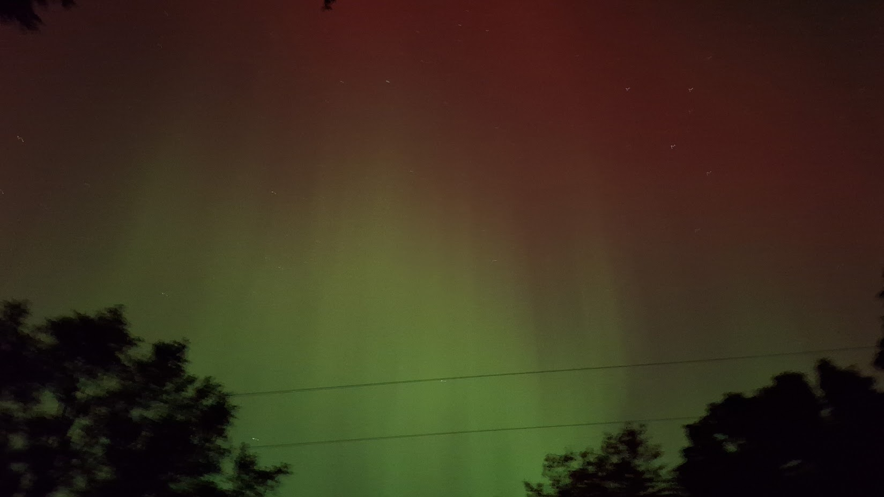
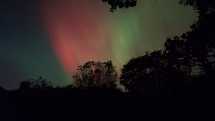
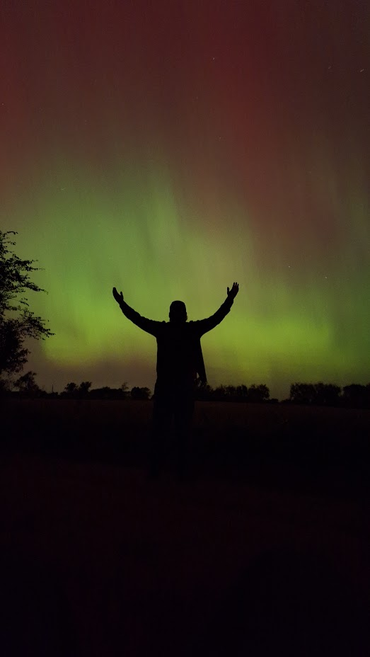

Chasing the Lights: The October 10, 2024 G5 Storm

Overhead at peak — reds and greens stretching across the sky.
The Setup
NOAA had been watching a CME barrel toward Earth for days, and by the afternoon of October 10th, the forecast had climbed into G4/G5 territory: Kp9, as high as the scale goes. I knew that this was usually a sign the show is going to be worth losing sleep over.
I set up for the night in Mayville, figuring if this storm delivered even half of what was forecast, it'd be worth it.
The Chase
The Slow Start
The night opened quiet. Conditions hovered around G2 for the first couple hours, a faint glow, nothing that screamed "historic storm." It's the part of every chase that tests your patience: you know the numbers say it should happen, but the sky isn't cooperating yet.
10:15 PM — The Substorm
Then it happened. Right around 10:15 p.m., the threshold jumped straight from G2 to G5. No gradual buildup — just a sudden surge as the substorm kicked in, and the sky went from barely-there to exceptionally bright almost instantly.
Peak Display
At its peak, the aurora was directly overhead, then shifted into vibrant reds and greens stretched across the northwestern sky. There was constant motion — the kind of shifting, pulsing movement that photos never fully capture. This wasn't a static glow; it was alive.


Northwest sky during peak substorm activity — the motion was constant.
The Shot
I shot the whole thing on a Samsung A54 using Night mode. No pro settings, no tripod tricks — just pointed and let the phone do the work. Honestly, at G5 brightness, the colors came through clearly even on a basic phone camera, which says something about just how intense this storm actually was.
Looking Back
It wasn't until afterward that I realized how big this storm really was — caused by a single, powerful CME, it ranks alongside the May 2024 "Gannon Storm" as one of the two strongest geomagnetic storms in over two decades. Aurora was visible at latitudes that almost never see it.
The big lesson for next time: don't assume a slow start means a quiet night. The best display of the whole event came out of nowhere, less than an hour after I almost called it.